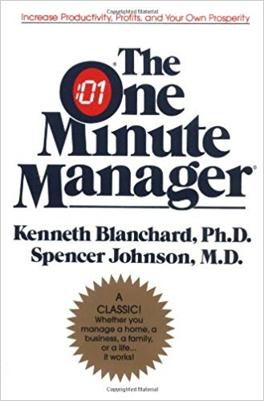
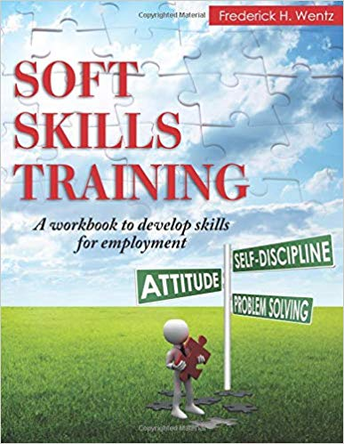

| The One Minute Manager | ||
|---|---|---|
| Author: | Kenneth H. Blanchard |  |
| Publisher: | William Morrow | |
| Edition: | 1st edition | |
| E-Book: | Download E-Book | |
| Getting Things Done: The Art of Stress-Free Productivity | ||
|---|---|---|
| Author: | David Allen | |
| Publisher: | Penguin Books | |
| E-Book: | Download E-Book | |
| Soft Skills Training: A Workbook to Develop Skills for Employment | ||
|---|---|---|
| Author: | Frederick H. Wentz |  |
| Publisher: | CreateSpace Independent Publishing | |
| E-Book: | Download E-Book | |